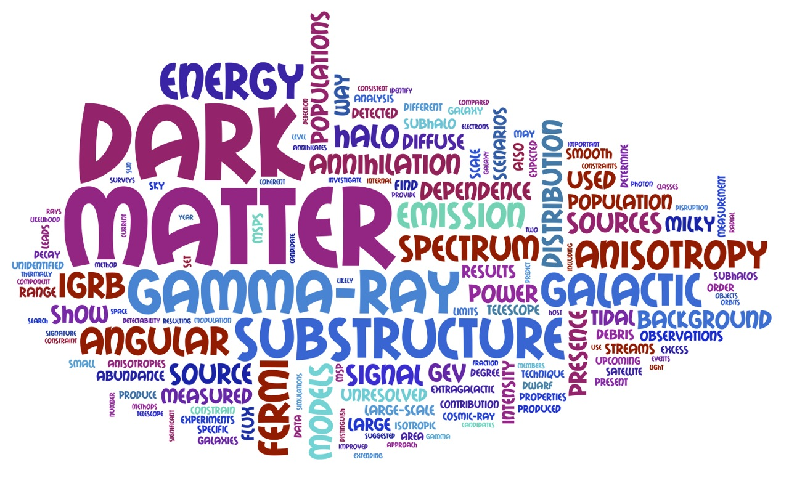

Jennifer Gaskins
Home
Publications
Talks
Outreach
CV
Contact
I'm a
Marie Curie Fellow
at the
GRavitation AstroParticle Physics Amsterdam (GRAPPA) Center
at the
University of Amsterdam
. My research focuses on revealing the particle nature of
dark matter
using observational probes such as gamma rays and other high-energy particles. I'm an Affiliated Scientist in the
Fermi Gamma-ray Space Telescope
collaboration, and a member of the
Cherenkov Telescope Array (CTA) Consortium
.
You can find me on twitter
@jmgaskins
.

Tag cloud created from abstracts of my recent papers.